EDH 7916: Contemporary Research in Higher Education
Summer 2020 (Session C)
A course in quantitative research workflow for students in the higher education administration program at the University of Florida
Overview Course information Software Schedule Lessons Assignments Questions Past courses About
Getting higher education data from common sources
There are many places you can find higher education data. Below are a few publicly-available sources with instructions on how to find and download data sets to use in your research. This list is by no means complete, but should give you a general idea of what’s available.
NCES Surveys
The National Center for Education Statistics (NCES) is part of the Department of Education’s Institute of Education Sciences (IES). NCES offers a large number of resources for researchers interested in higher education.
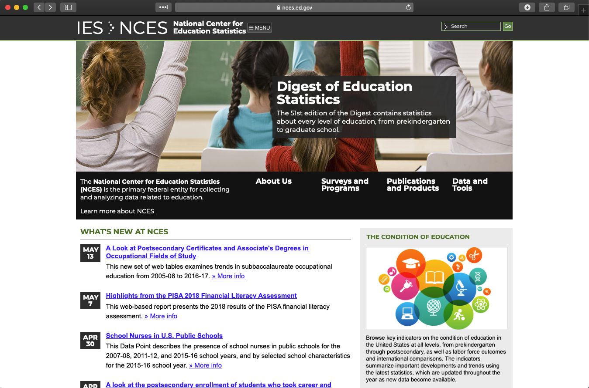
Among these are longitudinal surveys that follow different cohorts of students from high school through college and beyond.
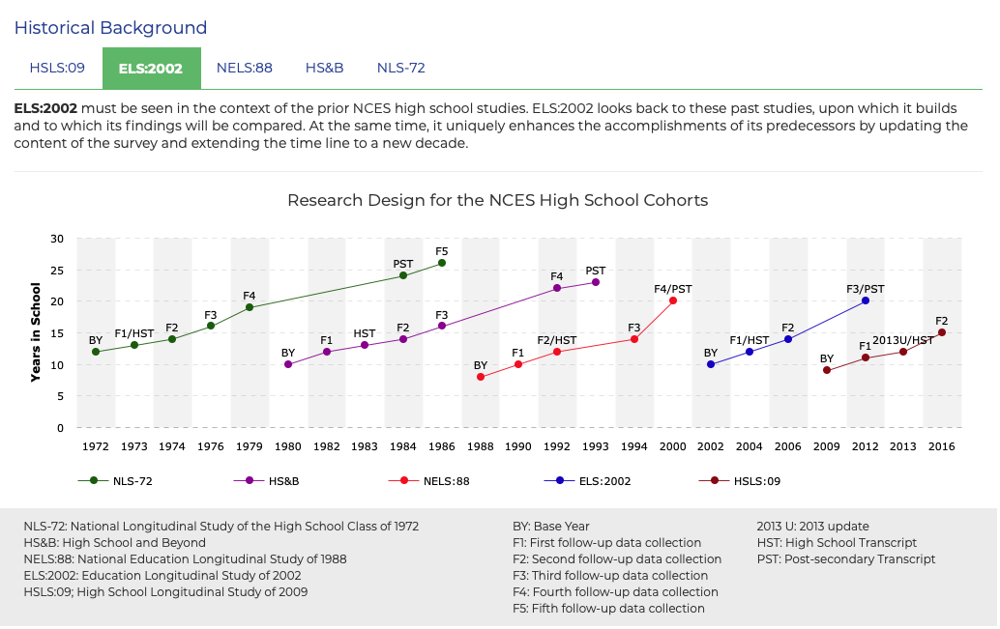
Specifically, we’ll go through the steps to download the Education Longitudinal Study of 2002 (ELS). The good news is that the process is the same for the other surveys.
To get to the online code book you’ll use to download the raw data files, head to the NCES homepage (nces.ed.gov) and click in the following order:
- Menu
- Data & Tools
- Downloads Microdata/Raw Data
- EDAT
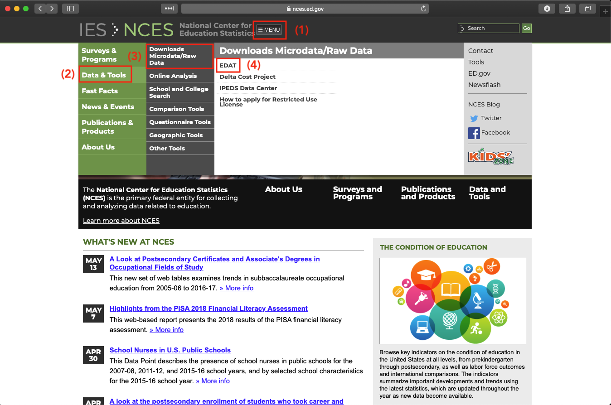
You may see a couple of popups — just agree. Once you’ve clicked through those, you should see the code book home screen. From here, you can access a number of data sets. We’ll focus on ELS, but as I said above, the process is the same: just choose another data set from the code book homepage if you’d rather use that data.
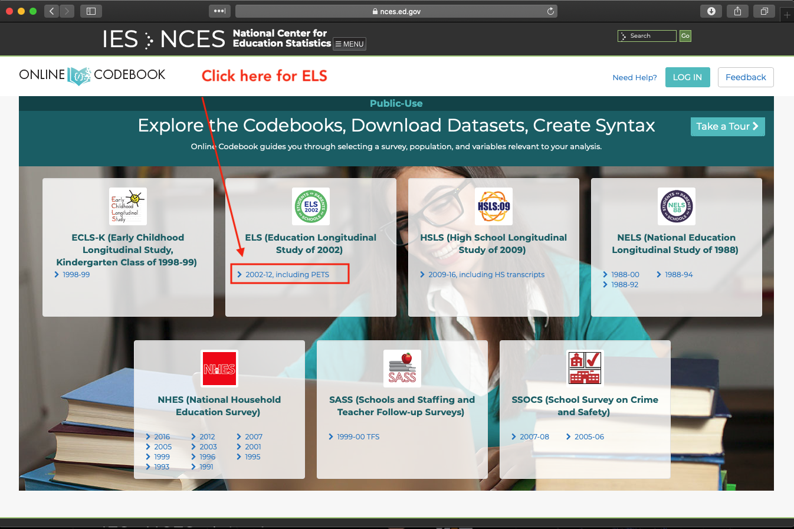
When you choose ELS, you’ll see the online code book. You can (and should) use this to learn about variables — their definitions, how they’re constructed, missing values, etc. You can also use this tool to only select a few variables for download. Don’t do that! You should plan to download the full data set and do any filtering or subsetting in your analytic code.
Click the Downloads button to get the data.
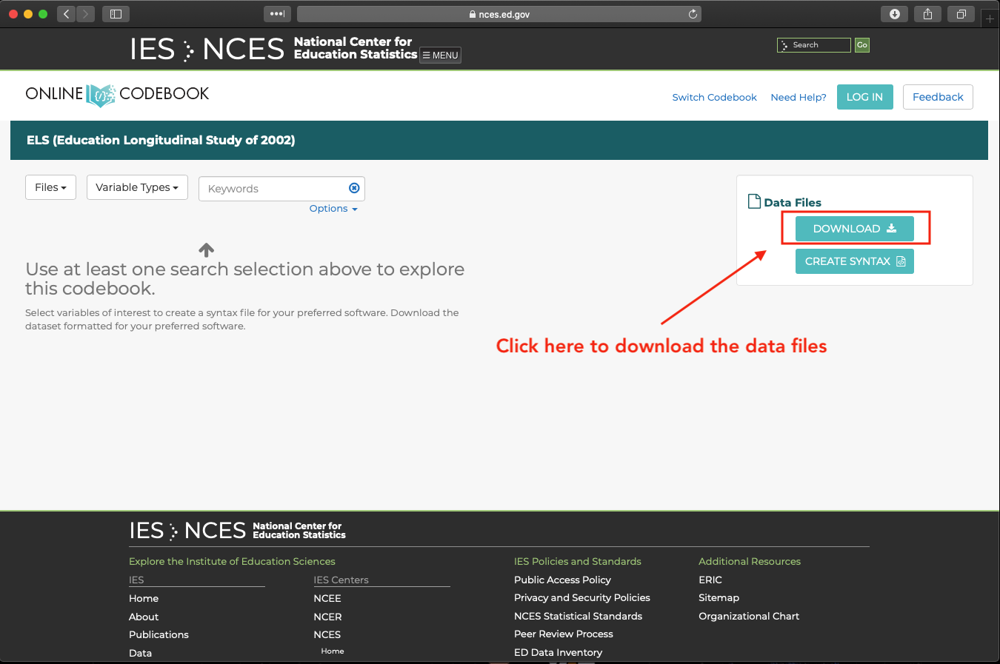
You’ll be presented with a number of file types. Because you are using R, you could read in all these data types — either with standard functions or functions from the tidyverse haven package.
My recommendation:
- If you don’t care about labels: Download the CSV version for maximum portability
- If you’d like labeled data: Download the STATA version and use
haven::read_dta()to input the data
I generally like labels, so we’ll choose the STATA version
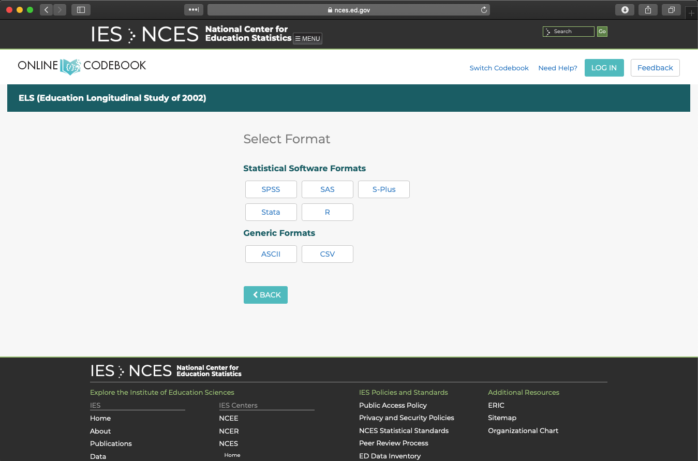
After choosing your file version, you can finally download the files. Go ahead and click each box to download all the files.
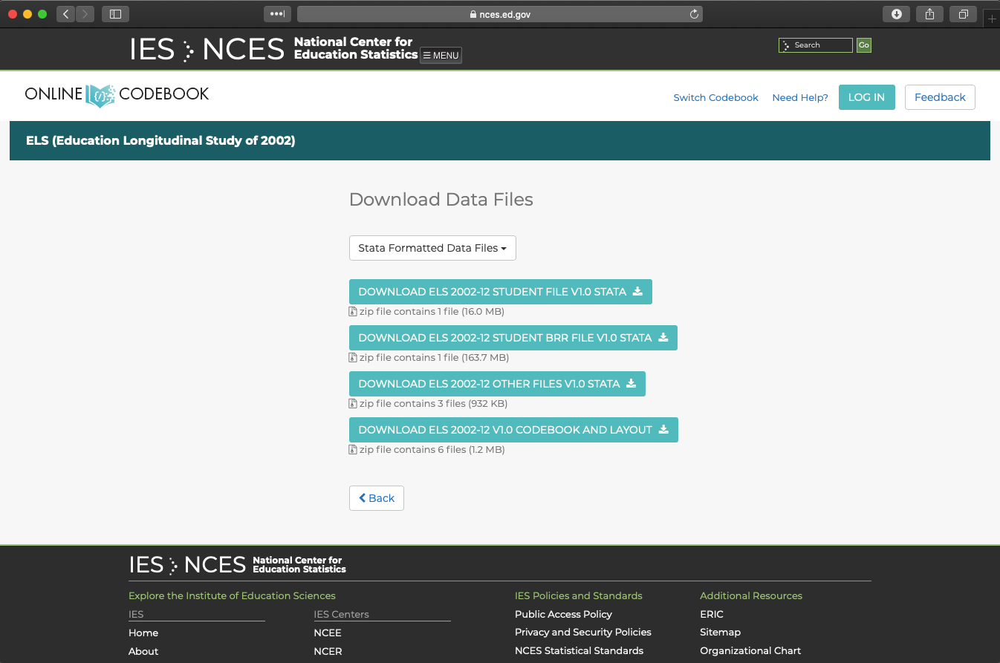
NLS
The Bureau of Labor Statistics (aside from a lot of other useful information) has a number of National Longitudinal Surveys. These are similar to those from the NCES, but much more expansive. They include:
- National Longitudinal Survey of Youth 1997 (NLSY97)
- National Longitudinal Survey of Youth 1979 (NLSY79)
- NLSY79 Children and Young Adults (NLSCYA)
- National Longitudinal Surveys of Young Women and Mature Women (NLSW)
- National Longitudinal Surveys of Young Men and Older Men (NLSM)
If you decide to use one of these surveys in your work, it will probably be the NLSY97, which began following a cohort of high schools students in 1997.
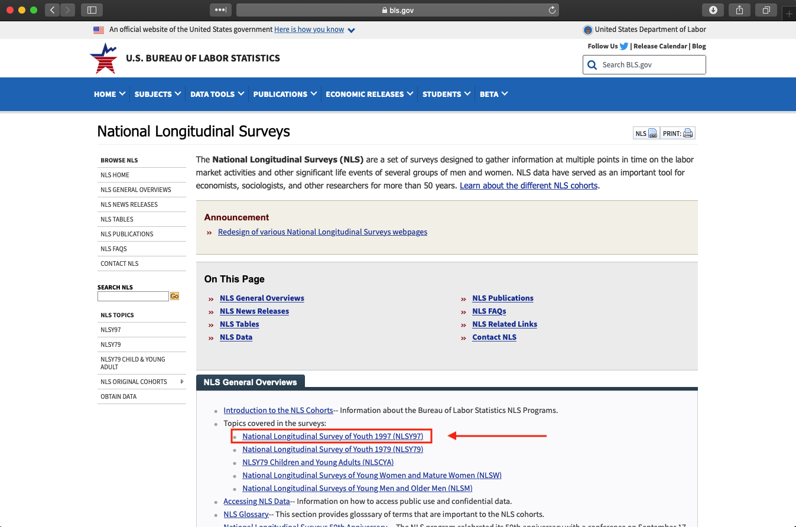
Investigator
Scrolling down on the NLS97 page, you’ll see a section for Accessing the data via the Investigator. Because the NLSY is so large, you may choose to go this route.

You’ll be shown a new external link. Click it to go to the data investigator.
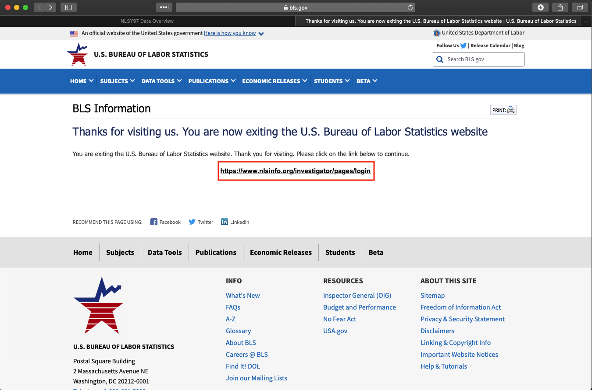
You can create a log in, which is nice if you come back often since you can save tag sets (variable groups you want to download), or just log in as a guest.
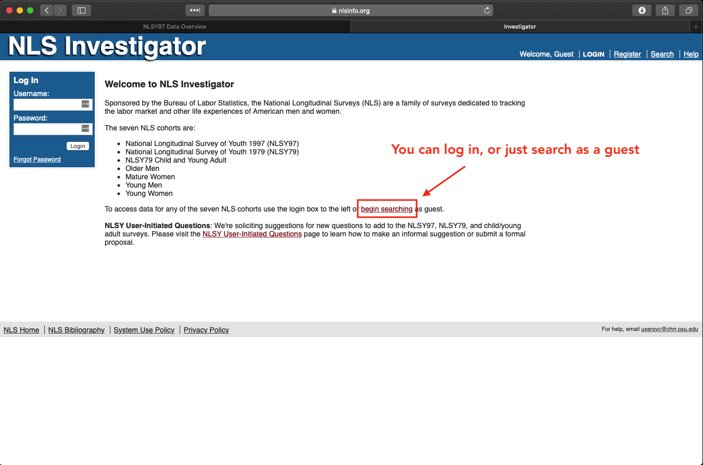
Once inside, the investigator will allow you to choose which NLS data you want to access. So even though we got here via the NLSY97 page, we can still look at NLSY79 data if we want. Whichever you choose, go ahead a choose to look at all data rounds.
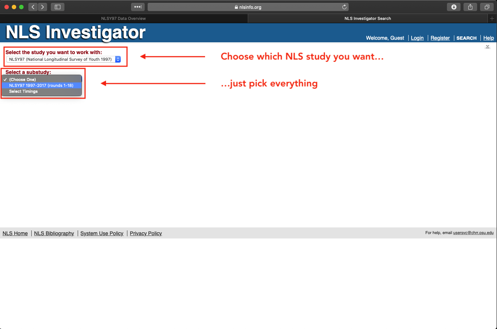
Now you can explore the data via the menu tree on the left side of the page. When you find a variable or set of variables you want to download, be sure to click the box next to the variable name. When you are finished, click the Save/Download tab.
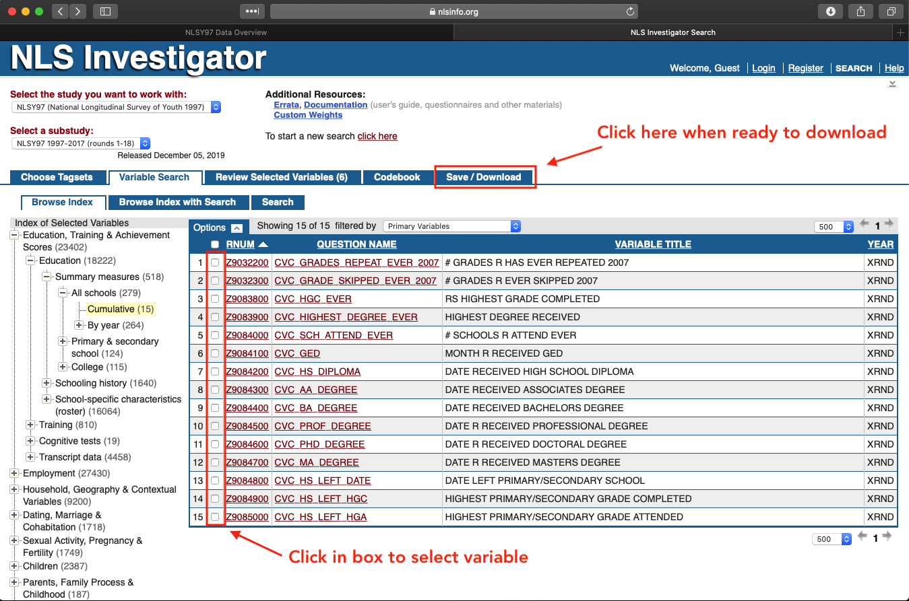
On the next screen, you’ll be able to save your tag set (meaning, not download the data, but name and keep the variable list you’ve chosen for a later date) or download.
Choose the Advanced Download tab. Within that tab, choose which file type you want to download (I’ve chosen just plain CSV here) and what you want to call the download. When you’re ready, click the download button.
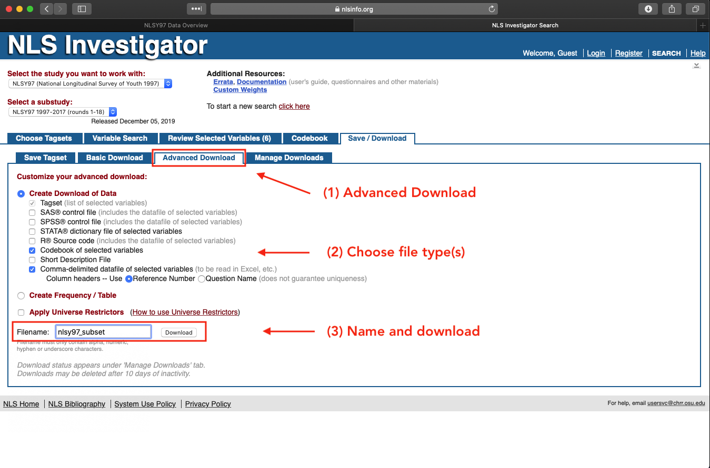
After your data set is prepared, you can download it to your computer.
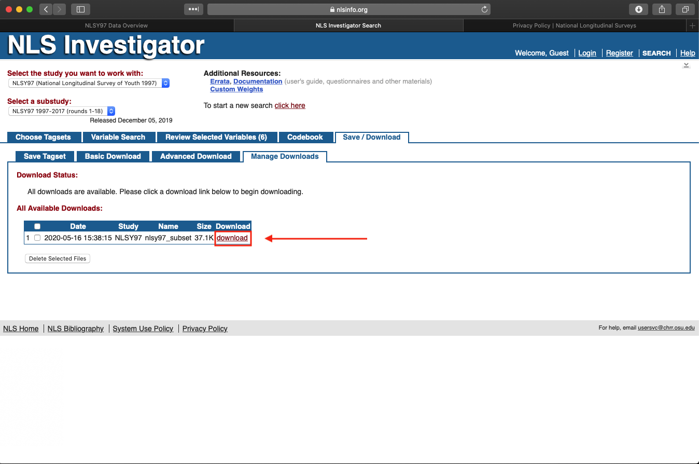
Direct download of full NLS data sets
Alternately, you can directly download the full NLS data files at www.nlsinfo.org/accessing-data-cohorts. I would recommend this approach if you think you’re going to want a large number of variables. Also, you’ll eventually find it easier to do your variable selection in R rather than via the Investigator.
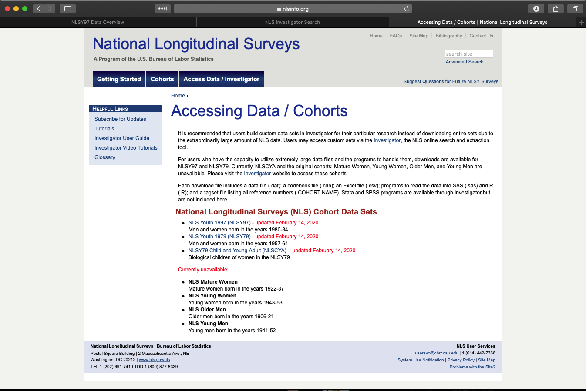
IPEDS
For institution-level information, the Integrated Postsecondary Education Data System (IPEDS) will likely be your first stop. While the IPEDS site (nces.ed.gov/ipeds) will let you explore individual institutions or use a portal to select particular variables (like the BLS investigator), you’ll want to just download the raw files. Begin by selecting Use the Data.
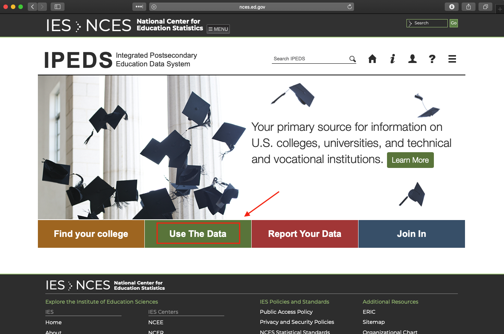
On the next page, look in the right column for the section Survey Data. From the drop down menu, choose Complete data files.
NB: If you know how to work with databases, the Access databases may be useful for you. But to use these, you either need a Microsoft Access license or a program to convert them to another format (like SQLite).
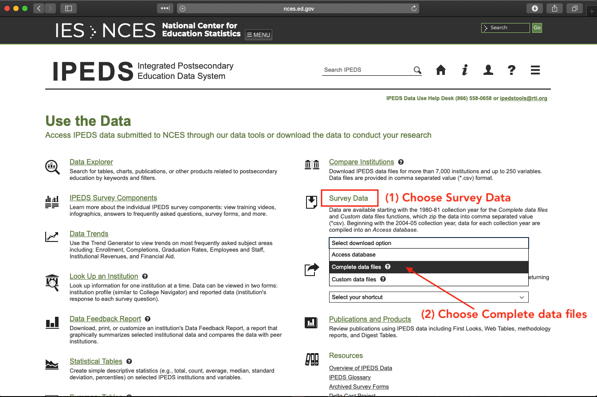
You may see a popup window — if so, just agree. You’ll now see a pretty lonely page. If you have a specific file or year you know you want, use the two drop down menus to filter your search. Otherwise, just click the Continue button to see your options.

Click the links in the Data File column to get zipped versions of the CSV files. If you want a Stata data file instead, choose the link from the Stata Data File column. You will probably want to grab the Dictionary file while you’re at it.
How do I know which file I need?, you might be asking. If you are unsure, you may want to download the dictionary file first and check for the data element(s) you think you need. After a while, you’ll get better at knowing (or reasonably guessing) which file is the one you need based on the names.
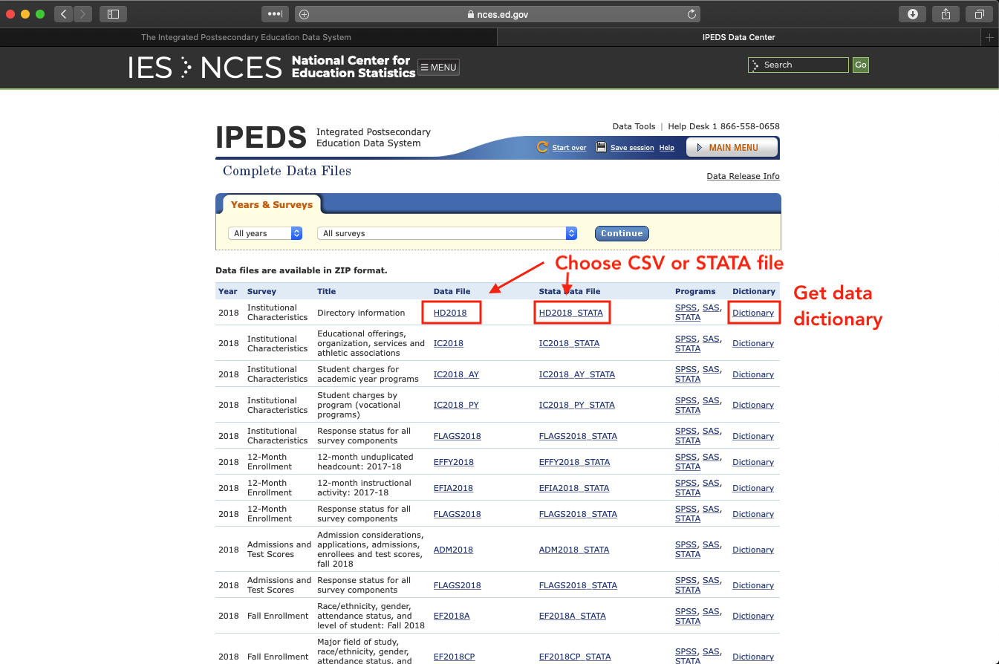
Download all of IPEDS via R
If you don’t want to bother with the portal, I’ve written an R script that will download the entirety of IPEDS to your computer (a little over 1 GB if you only want one type of data file). See github.com/btskinner/downloadipeds for the script and information on how to use it.
College Scorecard
Though it’s intended to give students and their families better information about their college options, the College Scorecard offers data that’s useful for research. In particular, you can find earnings data linked to schools and programs that you can’t find anywhere else.
Direct
If you go to the College Scorecard homepage (collegescorecard.ed.gov), you’ll see the portal that students use. Scroll to the bottom of the page.
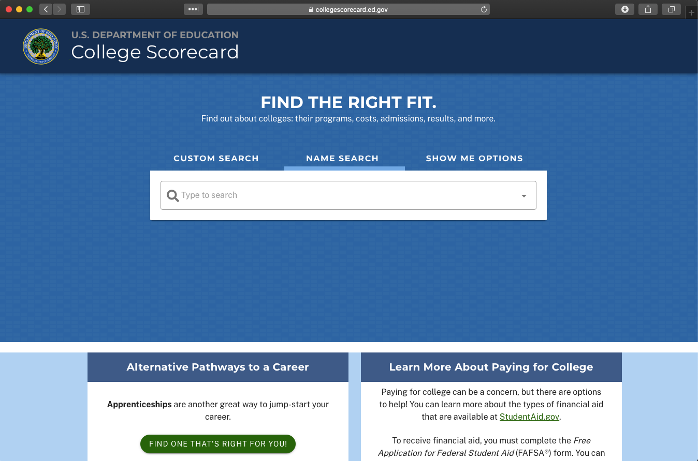
At the bottom of the page, you’ll see a link to download the data files that power the Scorecard.
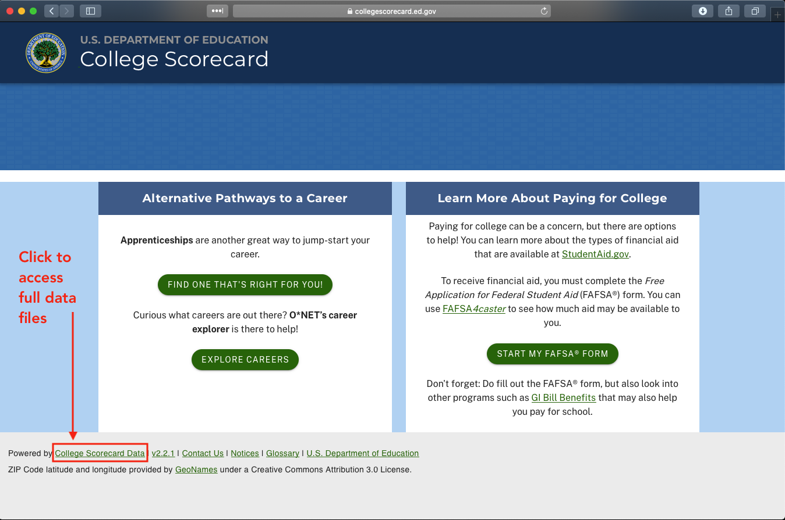
On the data page, you can download the full set of files or just the latest data. Unless you have a good reason to do otherwise, I would recommend getting all the data. You may also want to follow the Documentation tab to get the data documentation.

rscorecard
You can also download College Scorecard data directly from R using the rscorecard package, which accesses Scorecard data via an API. See btskinner.io/rscorecard for more information and examples.
American Community Survey (ACS)
The American Community Survey (ACS) is part of the U.S. Census that, unlike the decennial census, collects data each year. While it has information on education that you may want to use directly, the ACS is also a great source for place-based data that you can merge with other data sets (student-level data, for example, if you know where they live). The ACS homepage is here: census.gov/programs-surveys/acs.
There are a few ways to access ACS data. I will show you how to get the public use micro sample (PUMS) data. From the ACS home page, click on the Data link on the left.
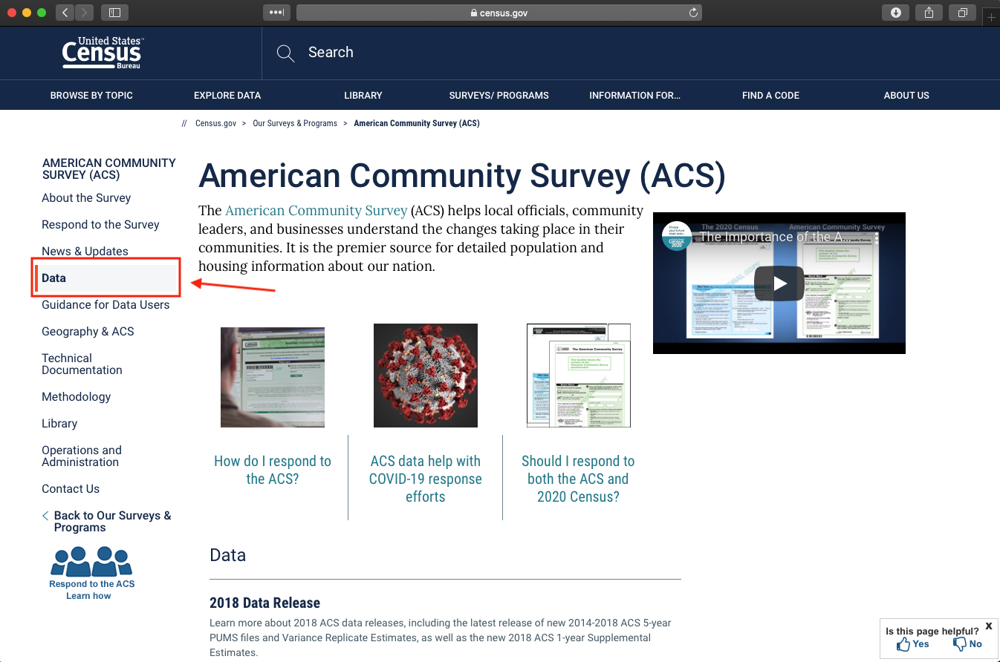
On the next screen, click on the PUMS link which again is on the left.
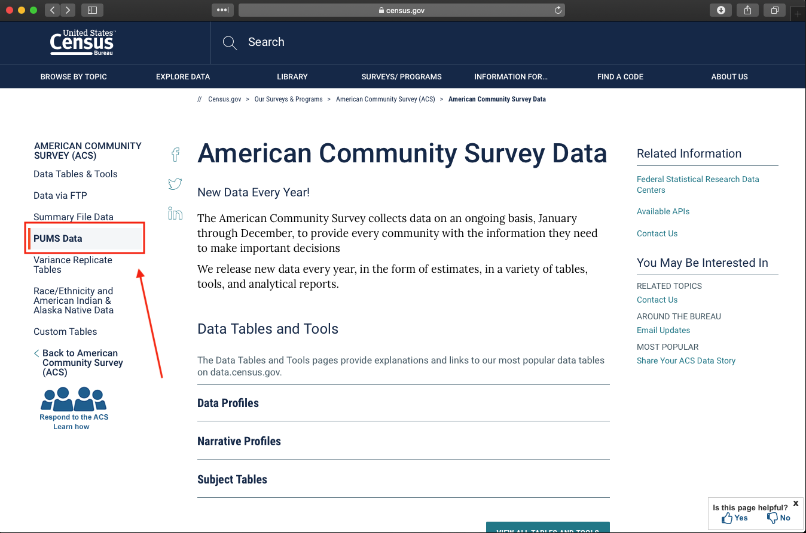
There are a couple of ways to get PUMS data: from the old FTP site or the newer data.census.gov site. Though it’s less pretty, I’ll show you the FTP version (if you have used FTP applications before to access data, you can use those here).
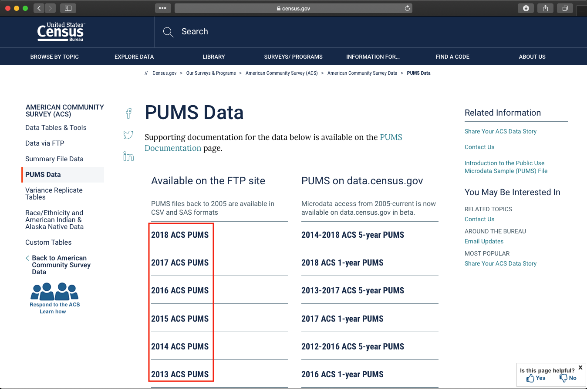
You’ll notice the FTP page looks like a file system. That’s basically what it is. Click on the file name you want. For more information on whether you want 1-, 3-, or 5-year estimates, check out this page: census.gov/programs-surveys/acs/guidance/estimates.html.
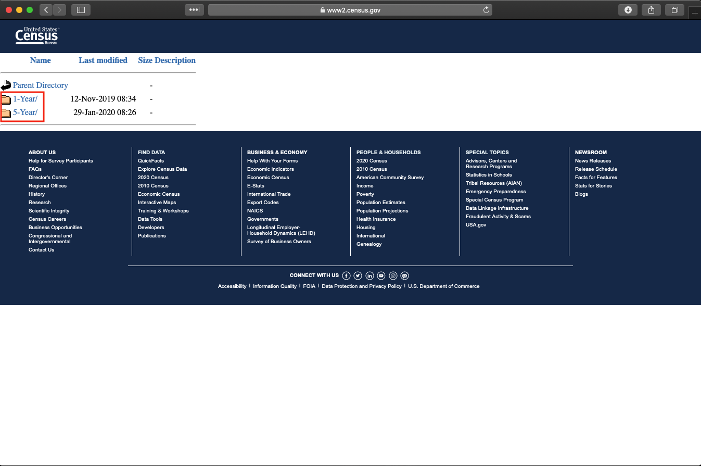
On the final page, you can choose data at the state level. There are two basic types of files, each pertaining to sections of the survey:
- Housing: These files start with h after the underscore
- Person: These files start with p after the underscore
For more information about which file to use or PUMS more generally, visit census.gov/programs-surveys/acs/technical-documentation/pums/about.html.
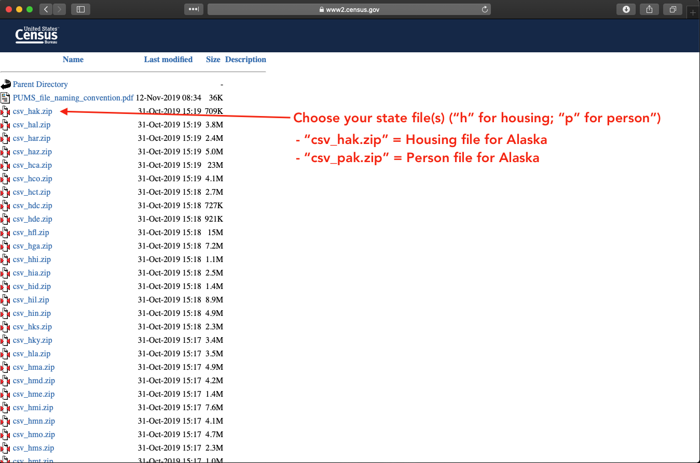
Other
Below are some other data sources you may find useful, either on their own or joined with the data sets above.
- Current Population Survey (www.census.gov/programs-surveys/cps.html)
- TIGER/Line Shapefiles (www.census.gov/geographies/mapping-files/time-series/geo/tiger-line-file.html)
- Bureau of Labor Statistics (www.bls.gov/data/)
- Delta Cost Project (deltacostproject.org/delta-cost-data)
- Urban Institute Data Explorer (educationdata.urban.org/data-explorer/)
- PISA (www.oecd.org/pisa/data/)